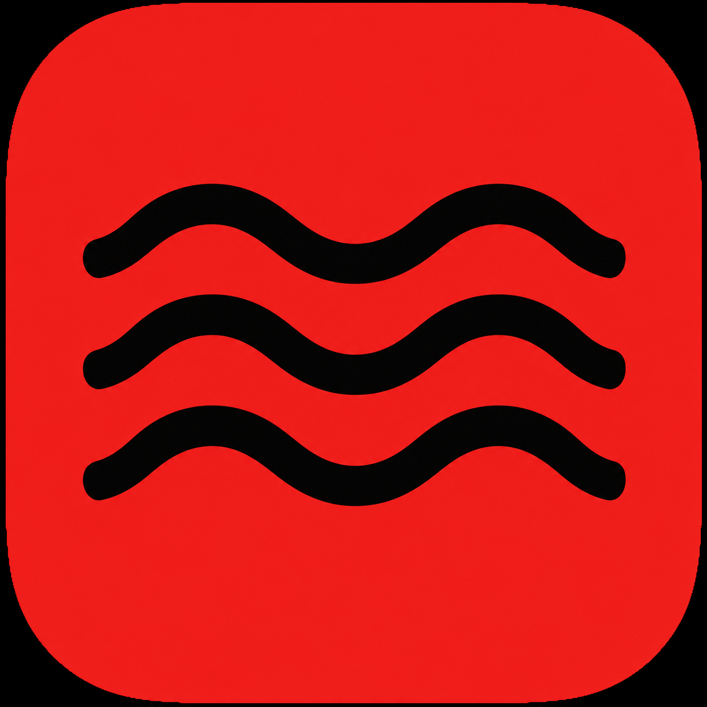

What it does
NordTek helps divers check a single recreational no-decompression dive plan, estimate gas needs, calculate SAC/RMV, and check MOD limits.

A serious recreational dive planning toolkit for checking no-decompression limits, gas needs, SAC/RMV, MOD, and nitrox top-up without clutter.
Start with the main Dive Planner, or jump into a focused calculator for SAC/RMV, gas, MOD, or nitrox top-up.
NordTek keeps the homepage simple and sends divers quickly into the tool they need.
NordTek will grow step by step without making the current tools harder to use.
NordTek Dive Planner is a practical planning aid for scuba divers.
It is not a substitute for proper training, experience, agency standards, gas analysis, dive computers or sound judgment. You are responsible for your own dive decisions.
NordTek Dive Planner is built as a practical planning aid for recreational scuba divers. The goal is to keep the app clean, fast and understandable before adding advanced systems like accounts, saved plans and future technical diving modes.
NordTek Dive Planner is a free recreational scuba diving planning tool designed to help divers estimate no-decompression limits, gas requirements, reserve volumes and dive logistics.
The planner provides quick calculations to support safer planning, while keeping the current app focused on recreational diving before advanced features like user accounts, saved plans and future technical modes are added.
NordTek helps divers check a single recreational no-decompression dive plan, estimate gas needs, calculate SAC/RMV, and check MOD limits.
This planner does not replace formal training, agency standards, dive computers, tables, gas analysis, local procedures, or real judgment before a dive.
Use this page to understand what the current beta tools do, how NordTek calculates results, and where the important limitations are. The full learning library and feedback/contact options will grow after the v1.5 release.
Beta v1.5 does not support repetitive dives, decompression planning, multi-gas dive plans, personal dive computer algorithms, ascent profiles, environmental conditions, emergency gas sharing or instructor-level planning decisions.
NordTek Dive Planner is a recreational dive planning aid. It helps you check a planned dive, estimate gas use, calculate SAC/RMV, check MOD, and review nitrox top-up math.
NordTek is not a dive computer, instructor, certification agency, decompression planner, gas analyzer, or replacement for training and judgment.
NordTek calculates surface-equivalent gas consumption from cylinder size, pressure used, dive time, and average depth. Use real dive data, not guessed numbers.
Gas required is estimated from SAC/RMV × ATA × time. NordTek uses planned maximum depth for a conservative gas check and subtracts the selected reserve before judging usable gas.
MOD is calculated from oxygen percentage and selected PPO₂. Always analyze your gas, label cylinders, match your computer settings, and follow your training limits.
This beta tool is only a top-up math estimate for trained gas blenders using appropriate oxygen-clean equipment and procedures. Always analyze the final cylinder before diving.
User profiles, saved dive plans, personal SAC history, and dive logs are planned for later. Beta v1.5 keeps the calculators usable without login.
A proper contact channel will be added later. For Beta v1.5, the focus is keeping the planning tools stable before adding feedback forms, accounts and saved plans.
Accounts, saved dive plans, personal SAC/RMV history, and dive log saving will be added in a future NordTek version. For now, the calculators work without an account.
Single-dive NDL check with optional gas consumption.
NordTek checks a single recreational air dive against a simple no-stop limit table. Your planned depth is rounded up to the next available table depth for a more conservative check.
NDL means no-decompression limit. It is the maximum planned bottom time at a given depth before mandatory decompression procedures would be required by the selected table/computer model.
Beta v1.5 is for single recreational air dives only. It does not yet handle repetitive dives, surface intervals, residual nitrogen, nitrox table planning, decompression planning or personal computer algorithms.
Calculate your surface-equivalent gas consumption from real dive data.
NordTek uses: gas used in litres ÷ dive time ÷ ATA at average depth. Gas used is calculated from cylinder volume × pressure used.
SAC and RMV are often used interchangeably by recreational divers. NordTek reports a surface-equivalent litres-per-minute rate that is closer to RMV, while keeping the familiar SAC wording.
For a more accurate SAC test, descend to a stable depth such as 10–15 m, swim normally for 10–15 minutes, and record start pressure, end pressure, time and depth.
SAC and RMV are often used interchangeably. NordTek calculates surface-equivalent gas consumption in L/min, which is technically RMV-style, while SAC is the familiar recreational term.
NordTek uses: Gas Required = SAC/RMV × ATA × Time, plus the selected safety stop if included. ATA increases with depth, so gas use rises as the dive gets deeper.
Gas planning is more conservative when it uses planned maximum depth instead of average depth. This helps account for ascent delays, workload, buddy issues and safety stops.
The reserve is gas you intend not to use during the main dive. NordTek subtracts reserve gas before deciding whether the planned profile has enough usable gas.
MOD is the maximum operating depth for a gas at a selected PPO₂. Going deeper increases oxygen partial pressure and oxygen exposure risk.
1.4 is commonly used as a working planning limit by many divers. Some divers choose 1.2 or 1.3 for a more conservative plan, while 1.6 is often treated as a contingency or decompression limit rather than a normal working limit.
Always analyze your gas, label the cylinder, match your dive computer settings, and follow your training and agency limits. NordTek shows the calculated MOD in the result and rounds the label MOD down to the nearest metre.
This tool estimates oxygen-first and air top-up pressures for a Nitrox Top-Up. Technically this uses pressure-contribution math, but the result is shown as simple bar values.
This is an ideal pressure estimate for trained gas blenders using appropriate oxygen-clean equipment and procedures. Actual fill procedures, temperature settling, analyzer readings and local standards may differ. The finished cylinder must always be analyzed and labeled before diving.